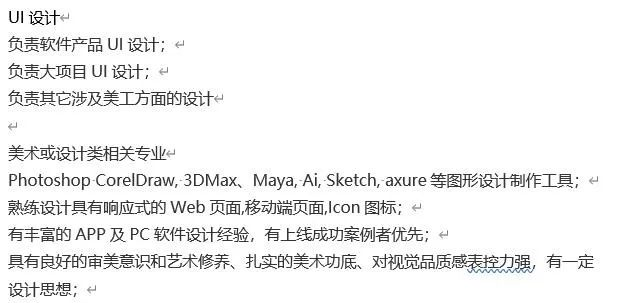
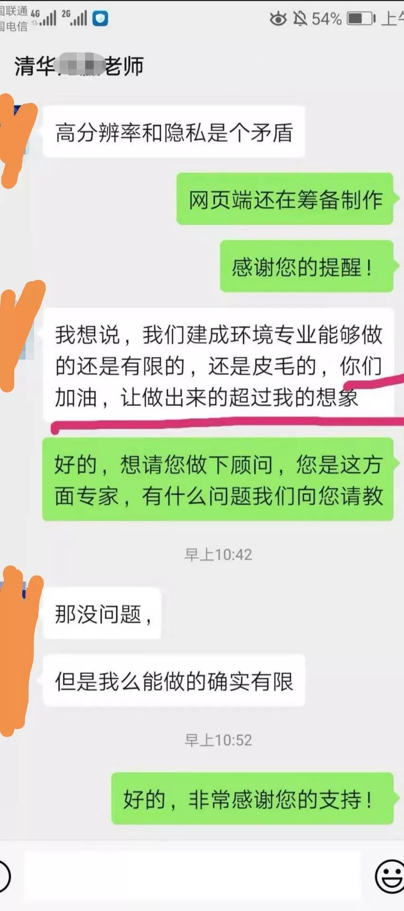

九个武汉普通人家的别样除夕 | 深网
原文链接 备份链接 作者 | 薛芳 孙宏超 相欣 安然 马关夏 李越 编辑 | 康晓 出品｜深网·腾讯小满工作室 欢迎下载腾讯新闻APP，阅读更多优质资讯 平平安安就是年。 突袭而至的新病毒能阻止很多中国人在这个春节里团聚，但没有什么能阻 …
抗击新型肺炎自救第三天:
132跳绳，07:33腹肌锻炼。图二是外网可以下载的家庭健身工具，内网如有朋友需要可联系。
抗击新型肺炎的第三天:
忙了一天，做数据，练习听力notetaking，和小家伙分手，与朋友打电话寻求心理救助。
今天做错了一件事，病毒没有孢子，我太急躁了，一下子写错了，这是我的失职，以后任何信息我都会在反复确认再发。很感谢朋友指出我的错误。我第一次做这样大事件的后方记者，对心理学和自己的社会责任的把控还是差太多。
在这一点上我会反复反思，之后也一定会把传媒越做越有利于公民。
今天外宣并入新闻搜集大家一起做数据整理，断断续续弄了一天，身心俱疲。目前已经联系了丁香园，明天会启动和丁香园以及其他几个地图大数据平台的信息共享。同事们都很努力，假如没有我们这一代年轻人的自信，这一切或许会更加致命吧——年轻人必须得有点年轻人的气质，否则在心态上离死也就不远了。
朋友们帮助我很多，帮忙转发，理解地评论。六天前我们获得的指令被公开，再不用做这种没有背书的宣传工作了。很感谢领导们的关心。
我们也没有必要再宣传什么东西了，负能量现在是肯定不能再发，正能量的大家都看得到。目前就发实打实有用的信息，争取流程一通过立刻发出，以尽力帮到更多的人。
武汉承认了错误，也就没有必要再纠结周市长的失职，他现在是最了解武汉的人，希望将功补过。
我们现在最应做的是集中力量保护好自己和家人。没有必要的恐慌不必有，现在其实是可以出门散步，只要五米范围内没人，就是安全的。
老人们在集体隔离期间很容易变得孤单，如果可以，多打电话，多询问关心，多陪他们下棋唠嗑，听听以前的故事，他们会很开心的。朋友们也将发现老人身上那熠熠生辉的时代耀斑。
今天真的很累，但是还得熬夜。工作弄完了，又要弄学习，一天做完这些差不多要16h，睡4h，喝两到三杯咖啡，适当一点烧酒，就扛过来了。不过说实话，做不完的。现在已经第七天了，不知道我们还要弄多久。
每天也要做这个健身运动，来带动大家，我们会尽力的。
团队招募一公开，报名的就特别多。很感动。
不过，今天也有难过的事情，就是我和小家伙分手了。或许是她太累了吧。我对不起她。希望我们能一直是朋友。我实在没有任何欲望恋爱了。她这样的人，遇不到的。
不管怎样，再累，想想武汉、北京、上海、杭州、深圳等等地方的同事们，以及十几位带队的大学教授、导师，心里踏实了很多。我知道，我们其实都在一线战斗。保卫后方的家人亲朋。
再坚持坚持，打完这场仗，就可以回家了。
最后问一下，有朋友懂UI吗？麻烦看一下下面的图，如果懂可以联系一下，感恩。结尾有我们目前做出来的时空流动我们是 中国2019-nCov疫情地图志愿者组织，我隶属于外联宣发组。
天不佑中华，人自佑华夏。
2020.1.27 墨尔本






DW深度 北林
长按二维码向我转账
受苹果公司新规定影响，微信 iOS 版的赞赏功能被关闭，可通过二维码转账支持公众号。
原文链接 备份链接 作者 | 薛芳 孙宏超 相欣 安然 马关夏 李越 编辑 | 康晓 出品｜深网·腾讯小满工作室 欢迎下载腾讯新闻APP，阅读更多优质资讯 平平安安就是年。 突袭而至的新病毒能阻止很多中国人在这个春节里团聚，但没有什么能阻 …
原文链接 备份链接 这是一场无法预知开始、但也许可以看到结局的抗击疫情特殊战役，它不仅仅是疫情爆发地汉口的战役，更是武汉及周边，湖北、乃至全国的战役 文 |《财经》记者 房宫一柳 黎诗韵 管艺雯 宋玮 高洪浩 余洋洋 陈晶 实习生 张凡 …
原文链接 备份链接 KOBE BRYANT 1978-2020 R.I.P. 2020年1月27日。 农历正月初三。 武汉封城第五天。 天门封城第四天。 天真冷啊。虽然疫区今天终于见到了久违的阳光。 可也传来了晴天霹雳的消息：科比坠机罹 …
原文链接 备份链接 正月初二，1月26日，从武汉回潜江第六天。 潜江今日仍无病例确诊。 早上起来，精神不错。昨晚种种郁结一扫而光。 听丁雪的话，加了衣服。原来计划初四左右回武汉，衣物带的少。也低估了潜江的寒冷，无裤子可加了。岳母 …
原文链接 备份链接 我是河南信阳人，在武汉读书，毕业后留在武汉，现居洪山区，是一个1岁多的孩子的妈妈。武汉是疫情中心，老家信阳距离武汉很近，现在也是疫情重点排查城市。 1月20号，“封城”三天前，钟南山院士提到新冠肺炎存在人传人现象。这个 …